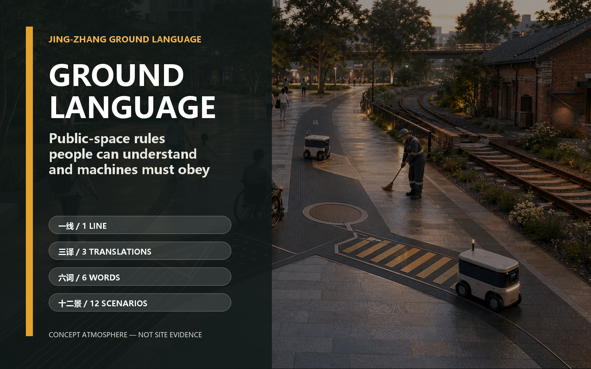
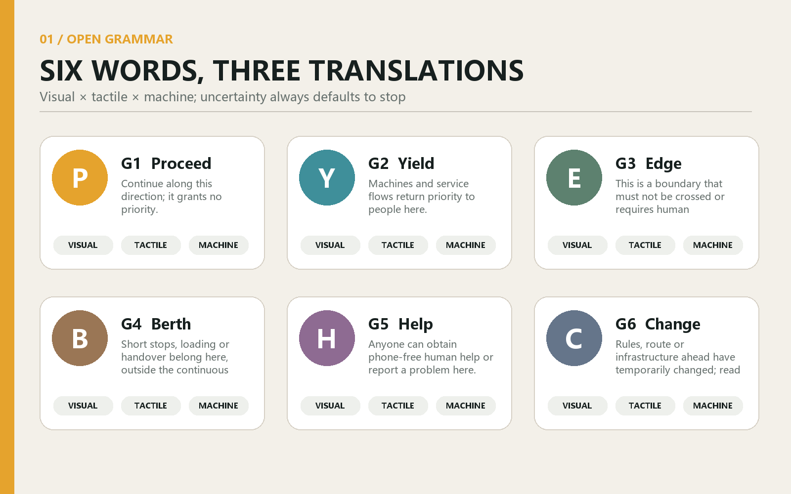
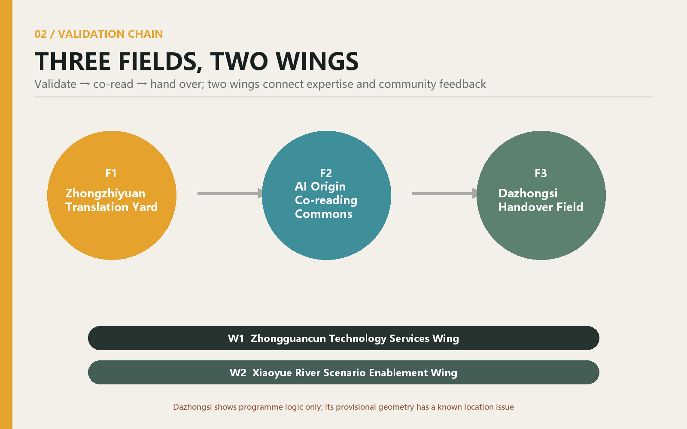
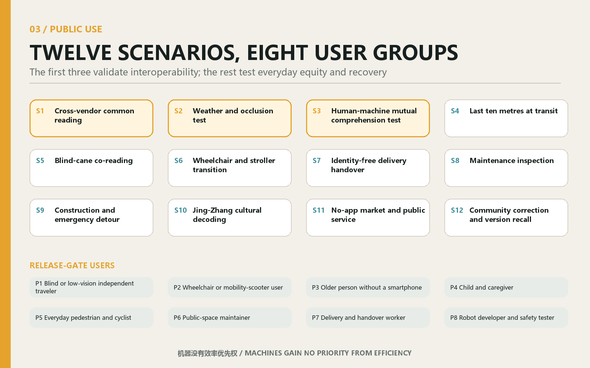
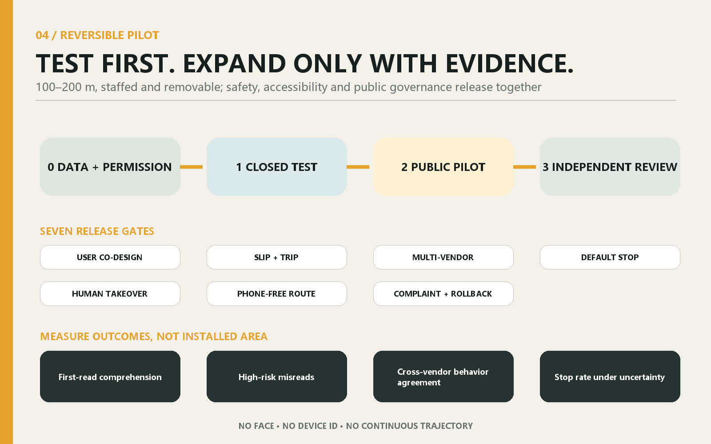

JING-ZHANG GROUND LANGUAGE: A Public Ground Language Readable by People and Machines
Six open ground words let pedestrians, disabled users and robots from different vendors read the same public-space rules, while three areas and two wings form a reversible, testable and publicly governed urban validation chain.
JING-ZHANG GROUND LANGUAGE
Make machines obey public-space rules that people can understand.
JING-ZHANG GROUND LANGUAGE is neither another urban screen nor a dedicated lane for one robot vendor. It is an open, passive, low-dependency language embedded in the public ground. Every state has visual, tactile and machine translations, allowing pedestrians, blind-cane and wheelchair users, maintainers and mobile robots from different vendors to share six meanings: LINE, YIELD, EDGE, BERTH, HELP and CHANGE. If machine reading fails, the machine stops and yields. A person without a phone or network can still complete the same journey.
Its structure is “one line, three translations, three fields, two wings, six words and twelve scenarios.” The Jing-Zhang corridor becomes a learnable Ground Language Line. Zhongzhiyuan, Beijing AI Origin Community and Dazhongsi take responsibility for validation, co-reading and handover. The two wings connect standards, businesses, maintenance and community feedback.Source Source
The first action is only a supervised, removable 100-200 metre pilot, not a corridor-wide construction project.Metric Metric

Design Basis and Source List
Public space now has a communication gap. People infer right of way from paving, kerbs, signs and other people; robots depend on vendor-specific maps, tags and cloud interfaces. As devices multiply, the city risks fragmenting into incompatible machine territories. Ground Language puts the interface back into public space and makes machine behaviour a rule residents can see and question.
It never replaces statutory tactile paving, traffic markings or emergency systems. Existing accessibility and traffic rules always prevail. No new tactile word can reach a public pilot until blind, low-vision, wheelchair and neurodiverse users confirm through co-design that it creates no trip, slip, confusion or exclusion risk.Source Source Source Standard
The originality audit covered the merged submission catalogue, PR titles and bodies, non-PR issues, code search and semantic searches. The three closest proposals address accessibility codes, autonomous-vehicle kerb governance and turn-taking, respectively. None combines an open passive ground grammar, visual/tactile/machine translations, cross-vendor tests and public version governance as one core proposition. Because the repository remains live, this is an evidenced conclusion at the audit date, not a permanent exclusivity claim. An incremental audit is mandatory immediately before the PR; a same-core match stops publication and triggers repositioning.Source
Three-Level Scope Framework
The proposal separates three scales. The 43.6 sq km study scope addresses open standards, industry collaboration and public AI governance; the approximately 11.4 sq km overall-design scope organises the line, public realm and scenario network; and the three named key areas, approximately 368.4 ha in total, validate technology, co-reading and operations. The announcement establishes the scales, while the repository polygons remain provisional and require full recomputation when official data arrives.Source Spatial data Metric
Industry and Future-City Research at the Coordinating Scope
Ground Language creates a vendor-neutral urban validation interface. Universities can research materials, tactility and perception; robot companies can perform cross-vendor tests under one public protocol; professional services can support safety, law, insurance and neutral procurement; communities and maintainers retain public release authority. Intelligence is expressed through readable ground, visible takeover and recoverable materials rather than pervasive screens.
Six Words: A Minimal but Complete Grammar
The six words express public-space states only. They carry no identity, payment, advertising or behavioural profile. The visual layer uses high-contrast edges and simple forms; the tactile layer uses surface differences validated through co-design; the machine layer uses an open code, geometry and checksum. If one layer is damaged, the other two remain legible. If the machine layer is uncertain, the device stops by default.
| Word | Human meaning | Spatial action | Minimum machine behaviour |
|---|---|---|---|
| G1 LINE | continuous passage | show directional continuity | follow slowly and yield to people |
| G2 YIELD | let others go first | provide a waiting pocket at conflict points | slow, stop and confirm before moving |
| G3 EDGE | boundary not to cross | mark hazard or protected interfaces | never cross; stop if localisation is uncertain |
| G4 BERTH | short stop and handover | move dwell activity out of the through route | stop only in a vacant berth |
| G5 HELP | human help is available | provide a visible, reachable service point | request human takeover without identity data |
| G6 CHANGE | temporary change or diversion | disclose works, events or faults | use the on-site version; stop on conflict |

Open does not mean unmanaged. Every word has a version, material batch, installation record, maintainer, rollback condition and public change log. Vendors may implement their own readers but cannot redefine a word. AprilTag demonstrates the value of an open visual fiducial, while Open-RMF offers an open route to multi-fleet coordination. Ground Language differs by translating the machine interface into a public-space state that people can directly read and contest.Source Source
Urban Renewal and Control-Plan-Depth Design at the Overall Scope
The overall design uses continuous public-ground states to connect campuses, innovation parks, communities, transit approaches and public services around the heritage corridor. The line is a relocatable organising spine, not a new redline. Yield pockets, berths, help points and change markers occupy only permitted candidate space that preserves clear width and statutory facilities.
Land-use, road, green-space and public-space layers are conceptual analytical overlays, while the building layer is a low-confidence structural placeholder. The package links problems, strategies, layers, metrics and delivery dependencies but makes no claim to approval-ready regulatory parameters.Depth Depth
Detailed Design of the Three Key Areas
F1 Zhongzhiyuan Translation Yard asks whether devices read correctly. It tests multiple vendors, rain, snow, dirt, occlusion, glare and default-stop behaviour, recording misreads, shutdowns and takeover—not merely recognition rate. F2 AI Origin Co-reading Commons asks whether people understand. Eight user groups revise form, tactility, explanations and non-digital routes in a near-campus public-service setting. F3 Dazhongsi Handover Field asks whether the system can enter real operations. Delivery, maintenance, events and public services rehearse berth handover, diversion, human help and version recall.Source Metric Metric
The wings are not new administrative boundaries. The Zhongguancun Technology Services Wing connects standards, law, safety evaluation, supply chains and business adoption. The Xiaoyue River Scenario Enablement Wing connects communities, green space, maintenance and continuous walking feedback. All three key-area polygons are provisional repository geometry. An open issue reports that the provisional Dazhongsi centroid is about 2.26 kilometres from Dazhongsi Station and near Beijing North Railway Station. The proposal therefore claims only programme-level logic, not a station, intersection quadrant, parcel or engineering location.Source Spatial data

AI Innovation Ecosystem, Personas and AI+ Scenarios
The first three scenarios form an industrial validation chain: S1 multi-vendor co-reading, S2 weather and occlusion, and S3 mutual human-machine comprehension. Nine everyday scenarios follow: the final ten metres to a station, blind-cane co-reading, wheelchair and pram transitions, identity-free delivery handover, maintenance inspection, construction and emergency diversion, Jing-Zhang cultural decoding, an app-free market and public service, and community correction with version recall.Metric
Eight user groups govern release: independent blind or low-vision travellers; wheelchair or mobility-device users; older people without smartphones; children and carers; pedestrians and cyclists; public-space maintainers; delivery and handover workers; and robot developers and safety testers. Every scenario declares a non-digital route, data boundary, accountable human, stop threshold and recovery record. Robots gain no priority from efficiency. Children and disabled users are release gates, not edge cases.Source Source Source

Land Use, Building Scale and Retain-Renovate-Demolish Method
Four conceptual zones support innovation collaboration, public service, cultural co-reading and scenario validation; they are not statutory land-use codes. Verified building inventories, ownership, age, structure and use are absent, so the proposal states no demolition count, new floor area or FAR. Professional work must survey first, then favour retention, use light adaptation where sufficient, and consider rebuilding only through lawful necessity. Ground Language itself favours removable surface layers and independent street furniture.Metric Metric
Transport, Transit, Utilities and Public Services
The transport strategy focuses on the final ten metres and conflict points. LINE grants no robot priority; YIELD creates waiting before crossings; BERTH removes handover from through movement; CHANGE discloses diversions. Transit links await official station, redline, flow and accessibility surveys, and the provisional Dazhongsi geometry cannot support entrance-level placement.
Candidate materials require slip, trip, drainage, freeze-thaw, snow, fading and cleaning tests. Installations cannot cover covers, fire access, drainage or statutory tactile paving. Visible human help and a static diversion remain available without cloud service.Source Depth
Blue-Green Space, Public Realm and Urban Character
Three tangible public works connect the language to Jing-Zhang culture. The Yield Marker makes “machines yield to people” the corridor’s opening promise. Ground Language Stone Zero displays the current six-word version, revision history and public test method. The Handover Bell creates a perceptible civic moment when a device transfers to human control or a major version changes. All three are conceptual, reversible surface or street-furniture installations. They do not attach to unverified railway heritage fabric or replace statutory signs.
Unlike a one-way AI display, the landmarks make value choices visible: technology may change, but human priority, identity-free access, visible failure and accountable responsibility cannot be silently updated away. They also form an open curriculum for schools, developers and residents, extending the centennial Jing-Zhang story from transport-engineering heritage to a contemporary culture of collectively setting rules for machines.
Beyond the landmarks, shaded paths, lawn edges and wet-weather surfaces offer low-risk co-reading and degradation tests. Every node remains subordinate to trees, sponge-city systems, heritage controls and public activity. Conceptual green and public-space ratios are geometry checks, not existing-condition surveys or planning controls.Metric Metric
Renewal Projects, Policy and Phasing
The first phase does not cover the corridor. Subject to site permission, it selects one fully supervised 100–200 metre segment that avoids statutory tactile paving and verified heritage fabric. Phase 0 confirms official boundaries, ownership, transport, accessibility, heritage, utilities and maintenance. Phase 1 tests materials and recognition in a closed environment. Phase 2 allows a staffed public pilot. Phase 3 uses independent evaluation to expand, revise or remove it.Depth Spatial data
Release gates include user co-design; clear distinction from statutory tactile paving; acceptable slip and trip performance; independent reading by at least two vendors; default stop under occlusion or conflict; effective human takeover; a complete phone-free route; and published complaint and rollback procedures. Success is measured through misreads and near misses, takeover time, non-digital completion, user comprehension, maintenance closure time and public issue-resolution time—not installed area. The pilot collects no faces, device identities or continuous trajectories. Necessary event logs are minimised, briefly retained and publicly documented.
Five minimum projects comprise the open dictionary and version rules, a closed material strip, multi-vendor reading tests, user co-design and the 100-200 metre public pilot. Vendor-neutral procurement, data minimisation, responsibility, public issues, maintenance times and mandatory rollback advance in parallel; a spatial installation cannot proceed before social and professional gates.
Metrics, Area Recalculation and Compliance
Metrics separate geometry checks, design-system counts and trial outcomes. Provisional area and conceptual ratios check consistency only; six words, twelve scenarios and three test scenarios are auditable design counts. Comprehension, high-risk misreads, cross-vendor behaviour, default stop, takeover time and phone-free completion must be measured in trials and are not assigned invented target values now.
The compliance, standard and design-depth matrices map tasks to chapters, layers, drawings and next professional actions. Every area is recomputed after official polygons arrive, and every trial metric publishes method, sample and failures.Metric Metric Depth

Risk, Copyright and Compliance
The overall boundary and three key areas use repository-maintained provisional rough geometry, not official redlines. Official road, building, parcel, heritage-protection, utility and transport surveys are absent. Land-use, road, green-space, public-space and phasing layers support conceptual organisation and structural review only. They cannot support retain-renovate-demolish decisions, FAR, quantities or approval. The building footprint is a low-confidence structural placeholder and FAR remains unknown.Metric Metric Depth
Before any field action, planning, transport, accessibility, materials, heritage, fire, utility, legal and operating teams must review the proposal with real users. Next tasks are to obtain official polygons and surveys; calibrate roads and pedestrian conflicts; test durability, drainage, snow, ice and cleaning; conduct tactile discrimination and cognition research; establish an open technical specification, vendor-neutral procurement, liability and version governance; and let an independent safety review decide whether a pilot may proceed.
Original text, data organisation, diagrams, PDFs and offline pages were generated for this call by the entrant and declared agent. External facts are limited to public or cleared sources in sources.json. The OpenAI-generated cover communicates atmosphere only and is not a photograph, survey or delivery promise. See report/copyright_statement.md.
Open Value
The innovation is not another QR code. It is a public covenant: rules obeyed by machines should also be visible, tangible, debatable and rejectable by people. Six words are small enough to test on a real segment. Three translations are open enough to resist vendor lock-in. Three fields and two wings are complete enough to connect research, co-design, operations and governance into Haidian’s innovation chain. If the test fails, the ground can be restored. If it succeeds, the city gains not a proprietary facility but a replicable, auditable and human-first layer of public AI infrastructure.
References
Project sources include the official announcement, agent taskbook, site package, source registry and open data issues. Public cases include Japanese and UK tactile-paving guidance, MTA Accessible Station Lab, ITU-T F.921, AprilTag, ISO/TR 4448-1, Open-RMF and Boston's sidewalk-delivery-robot pilot. Links, access dates, applicable lessons and limitations are registered in sources.json and visual/assets/data/case-studies.json; the proposal never extrapolates case outcomes as project outcomes.Source Source